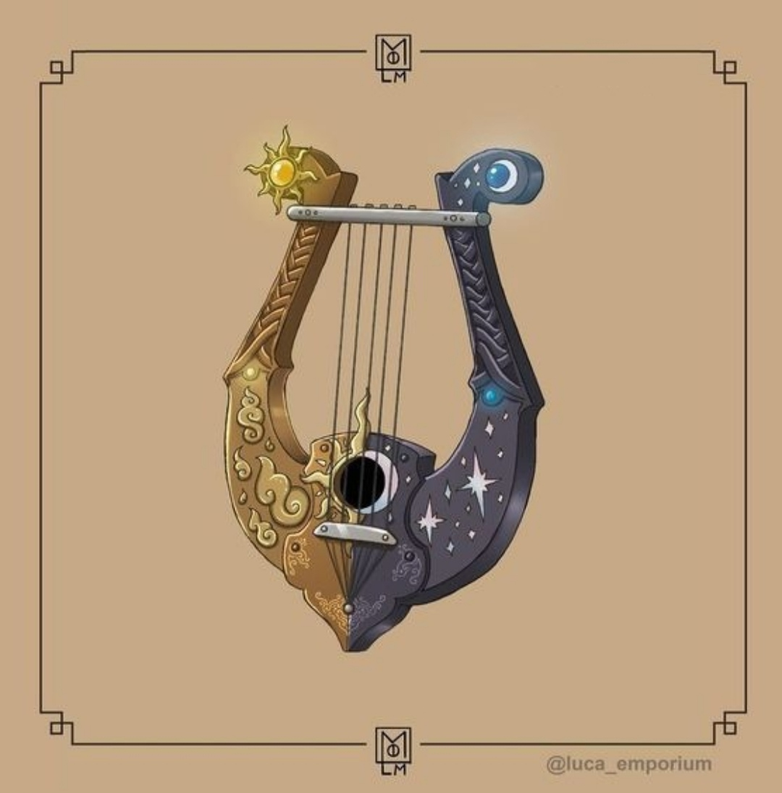

1
Cadı Avcısı Karakter Başvuruları / Alpheus Esther Vayolina
« : 03 Mart, 2022 13:39:39 - Kurgusal Tarih: Ekim 1866 »
Karakterin Adı ve Soyadı:Alpheus Esther Vayolina
Karakterin Yaşı: 26
Karakterin Temel Kişilik Özellikleri: Nazik, merhametli, şefkatli ve sofu bir genç rahip.
Karakterin Kısaca Geçmişi: Alpheus sınıf ayrımının aşırı belirgin olduğu bir yerde dünyaya gelmişti. Bir cadı avcısı olan babası daha o çok küçükken cadılarla olan bir çatışmada hayatını kaybetmişti. Başka bir çaresi olmayan ve hayatta kalmak için her şeyi göze alabilecek raddeye gelen büyüsüz alt sınıf annesi, oğlunu bizzat babasını öldürmüş olan Amerikan cadı grubuna satmaktan hiç çekinmemişti. Buna rağmen Alpheus ne annesinden, ne de gruptan nefret edebilmişti. Bu cadı grubu istenmeyen ve büyüsü baskılanmış büyücü çocuklarına şefkat verip özlerine döndürerek büyücü olmalarını sağlamak istediklerini iddia ediyor olsa da aslında tek yaptıkları şey bu çocukların kırık kalpleri ve duygusal boşluklarından yararlanıyor oluşlarıydı. Üstlerinde ilginç deneyler yapılan bu çocuklar bir şekilde büyü gücü kazanmaya başlamışlardı evet ancak bedenleri bunu kaldıramıyordu.
Bir gece küçük Alpheus buradan kaçmaya çalışırken zayıf ve güçsüz bedeni sağ olsun, bacakları onu taşıyamaz hale geldi ve dışarıyı rahatça gösteren bir duvarın üstünde dinlenmeye başladı. Burada otururken organizasyon binasının bahçesinden içeri gizlice giren kalabalık bir güruh fark etti. Niyetlerinin dostluk olmadığı aşikardı. İki seçeneği vardı; ya organizasyona haber vererek hayatlarını kurtaracak ama deneylerin sürmesini sağlayacak, ya da çenesini kapatıp olan biteni izleyerek kurtarılmayı bekleyecekti.
İkisini de yapmadı ve kendisini yüksek duvardan aşağı attı. Sesi duyan gruptan kızıl bir adam ayrıldı ve sesin kaynağını kontrol etti. Karşısında parıl parıl parlayarak kendine bakan bir çift göz gördü. Kehribarın en güzel halini gözlerine takmış gibiydi Alpheus, yaşadığı her şeye rağmen gözlerindeki o masum ve güzel parıltıyı yitirmemişti. Daha sonra bu çocuğun gözleri Altından Gözler olarak, kendisi ise Altın Gözlü adlandırılacaktı, ne olursa olsun dünyayı en saf ve değerli haliyle görebildiği için. Kızıl adam şefkatle çocukla ilgilenip yerden kaldırdı. Alpheus ise hayatında ilk ve son ihanetini yaptı; "İçeride on yedi cadı var. On tanesi alt katta toplantıda. Yedi tanesi üst katta uyuyor. Saldıracaksanız odamın camından girebilirsiniz." dedi. Hayatında ilk ve son defa birilerinin canının yanmasını istedi Alpheus. Bu cadılar sadece kendisine zarar veriyor olsa gıkını çıkarmaz, yapılan her şeye göz yumardı lakin gözlerinin önünde hayatlarını yitiren onlarca dostunu hafızasından asla silmeyecekti. Angelica, Starling, Bell, Edgar ve yeri ayrı olan, en iyi dostu biricik Esther... Onların son sözlerini nasıl çıkarabilirdi aklından? Yardım çığlıklarını, durmaları için yalvaran ağlayışlarını nasıl unutabilirdi? Affediciliği ve nezaketi bu yüzden sessizdi bu yıldızlı gecede.
Cadı avcısı olduğunu öğrendiği bu güruh aynı onun dediği gibi yaptı. Başarılı bir şekilde o gece on yedi cadının hepsinin canına kıydılar. Gelen sesleri duymamak için kulaklarını kapattı. Bu gece dilsiz ve sağırdı Alpheus, sadece Altından Gözler yıldızlara dönüktü. Saatlerce orada bekledi, geceyle gündüzün ahengini izledi. Yer değiştirmelerini izledi. Alpheus için günün en değerli anı geceyle gündüzün dans eden bir çift misali dönerek yer değiştirdiği andı. Bu da zaten her sabah o saatte kalkıp gün doğumunu izlemesinin yegane sebebiydi. Kuşlar neşeyle öterken, tatlı bir sabah meltemi yüzünü okşarken sesler kesildi. Yanında birini hissetti, başını kaldırıp baktığında kızıl adamı gördü. Gülümseyerek selamladı. Adı sorulduğunda duraksadı bir anlığına. "Alpheus... Esther. Alpheus Esther Vayolina." dedi.
İstediğiniz Meslek: Rahip
Karakterinizin Mahşer Yolu: Gelin
Başlangıç Teçhizatı: Delici Ok, Gümüş Ok, Kesici Ok, Kutsal Kitap,Kutsal Su, Sis Oku, Sicim Oku, Yanıcı Ok, Zehirli Ok (hesaplamalarıma göre 11 gp ediyor amma velakin fazla ediyorsa oklardan birini atalım pls)
İmza Teçhizat: Lir. Üstündeki 'mucize' sayesinde büyülerin sözlü değil melodik yapılmasını sağlar. Aynı şekilde yaya da dönüştürülebilir ancak kendine ait oklara sahip değildir ve 'mucizeye' sebep olmaz.
Karakterin Yaşı: 26
Karakterin Temel Kişilik Özellikleri: Nazik, merhametli, şefkatli ve sofu bir genç rahip.
Karakterin Kısaca Geçmişi: Alpheus sınıf ayrımının aşırı belirgin olduğu bir yerde dünyaya gelmişti. Bir cadı avcısı olan babası daha o çok küçükken cadılarla olan bir çatışmada hayatını kaybetmişti. Başka bir çaresi olmayan ve hayatta kalmak için her şeyi göze alabilecek raddeye gelen büyüsüz alt sınıf annesi, oğlunu bizzat babasını öldürmüş olan Amerikan cadı grubuna satmaktan hiç çekinmemişti. Buna rağmen Alpheus ne annesinden, ne de gruptan nefret edebilmişti. Bu cadı grubu istenmeyen ve büyüsü baskılanmış büyücü çocuklarına şefkat verip özlerine döndürerek büyücü olmalarını sağlamak istediklerini iddia ediyor olsa da aslında tek yaptıkları şey bu çocukların kırık kalpleri ve duygusal boşluklarından yararlanıyor oluşlarıydı. Üstlerinde ilginç deneyler yapılan bu çocuklar bir şekilde büyü gücü kazanmaya başlamışlardı evet ancak bedenleri bunu kaldıramıyordu.
Bir gece küçük Alpheus buradan kaçmaya çalışırken zayıf ve güçsüz bedeni sağ olsun, bacakları onu taşıyamaz hale geldi ve dışarıyı rahatça gösteren bir duvarın üstünde dinlenmeye başladı. Burada otururken organizasyon binasının bahçesinden içeri gizlice giren kalabalık bir güruh fark etti. Niyetlerinin dostluk olmadığı aşikardı. İki seçeneği vardı; ya organizasyona haber vererek hayatlarını kurtaracak ama deneylerin sürmesini sağlayacak, ya da çenesini kapatıp olan biteni izleyerek kurtarılmayı bekleyecekti.
İkisini de yapmadı ve kendisini yüksek duvardan aşağı attı. Sesi duyan gruptan kızıl bir adam ayrıldı ve sesin kaynağını kontrol etti. Karşısında parıl parıl parlayarak kendine bakan bir çift göz gördü. Kehribarın en güzel halini gözlerine takmış gibiydi Alpheus, yaşadığı her şeye rağmen gözlerindeki o masum ve güzel parıltıyı yitirmemişti. Daha sonra bu çocuğun gözleri Altından Gözler olarak, kendisi ise Altın Gözlü adlandırılacaktı, ne olursa olsun dünyayı en saf ve değerli haliyle görebildiği için. Kızıl adam şefkatle çocukla ilgilenip yerden kaldırdı. Alpheus ise hayatında ilk ve son ihanetini yaptı; "İçeride on yedi cadı var. On tanesi alt katta toplantıda. Yedi tanesi üst katta uyuyor. Saldıracaksanız odamın camından girebilirsiniz." dedi. Hayatında ilk ve son defa birilerinin canının yanmasını istedi Alpheus. Bu cadılar sadece kendisine zarar veriyor olsa gıkını çıkarmaz, yapılan her şeye göz yumardı lakin gözlerinin önünde hayatlarını yitiren onlarca dostunu hafızasından asla silmeyecekti. Angelica, Starling, Bell, Edgar ve yeri ayrı olan, en iyi dostu biricik Esther... Onların son sözlerini nasıl çıkarabilirdi aklından? Yardım çığlıklarını, durmaları için yalvaran ağlayışlarını nasıl unutabilirdi? Affediciliği ve nezaketi bu yüzden sessizdi bu yıldızlı gecede.
Cadı avcısı olduğunu öğrendiği bu güruh aynı onun dediği gibi yaptı. Başarılı bir şekilde o gece on yedi cadının hepsinin canına kıydılar. Gelen sesleri duymamak için kulaklarını kapattı. Bu gece dilsiz ve sağırdı Alpheus, sadece Altından Gözler yıldızlara dönüktü. Saatlerce orada bekledi, geceyle gündüzün ahengini izledi. Yer değiştirmelerini izledi. Alpheus için günün en değerli anı geceyle gündüzün dans eden bir çift misali dönerek yer değiştirdiği andı. Bu da zaten her sabah o saatte kalkıp gün doğumunu izlemesinin yegane sebebiydi. Kuşlar neşeyle öterken, tatlı bir sabah meltemi yüzünü okşarken sesler kesildi. Yanında birini hissetti, başını kaldırıp baktığında kızıl adamı gördü. Gülümseyerek selamladı. Adı sorulduğunda duraksadı bir anlığına. "Alpheus... Esther. Alpheus Esther Vayolina." dedi.
İstediğiniz Meslek: Rahip
Karakterinizin Mahşer Yolu: Gelin
Başlangıç Teçhizatı: Delici Ok, Gümüş Ok, Kesici Ok, Kutsal Kitap,Kutsal Su, Sis Oku, Sicim Oku, Yanıcı Ok, Zehirli Ok (hesaplamalarıma göre 11 gp ediyor amma velakin fazla ediyorsa oklardan birini atalım pls)
İmza Teçhizat: Lir. Üstündeki 'mucize' sayesinde büyülerin sözlü değil melodik yapılmasını sağlar. Aynı şekilde yaya da dönüştürülebilir ancak kendine ait oklara sahip değildir ve 'mucizeye' sebep olmaz.
